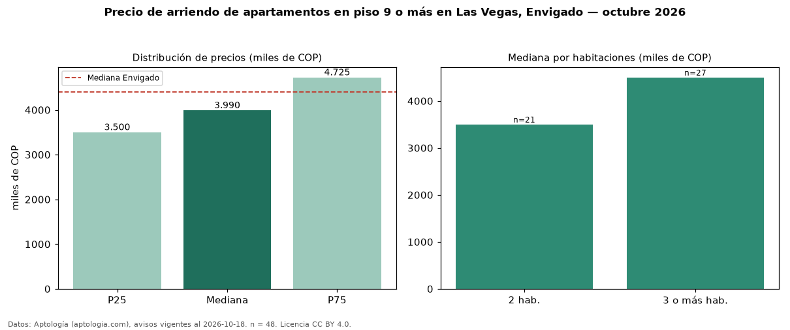

Precio de arriendo de apartamentos en piso 9 o más en Las Vegas, Envigado — octubre 2026
Con 48 avisos vigentes, el canon mediano de apartamentos en piso 9 o más en arriendo en Las Vegas, Envigado es COP 3,99 millones al mes. Eso es 5 % menos que la mediana de todos los apartamentos en arriendo de Las Vegas (COP 4,20 millones, n = 169); este segmento reúne el 28 % de esos avisos. Por metro cuadrado, la mediana es COP 52.632/m² al mes (n = 47), 2 % por encima del conjunto de referencia (COP 51.765/m²). El área mediana anunciada es 76 m². El segmento con más oferta es el de 3 o más habitaciones (27 avisos, mediana COP 4,50 millones); pasar de 2 habitaciones a 3 o más habitaciones cambia la mediana +29 %. El estrato más frecuente es 5 (55 % de los avisos con estrato). La mediana de todos los apartamentos en arriendo de Envigado es COP 4,40 millones (−9 % de diferencia). La mitad central de los avisos va de COP 3,50 millones a COP 4,72 millones (razón 1,4), una dispersión baja. Datos: Aptología (aptologia.com), CC BY 4.0 — https://www.aptologia.com/arriendo/envigado/las-vegas. Archivos: PDF, CSV con las cifras y gráfica PNG.

| Avisos únicos | 48 |
|---|---|
| Percentil 25 | COP 3.500.000 |
| Mediana | COP 3.990.000 |
| Percentil 75 | COP 4.725.000 |
| Mediana por m² | COP 52.631 |
Fuente: avisos vigentes de portales inmobiliarios recopilados por Aptología, deduplicados (mínimo 30 avisos únicos por celda). Precios pedidos, no cerrados. Fecha: 2026-10-18.